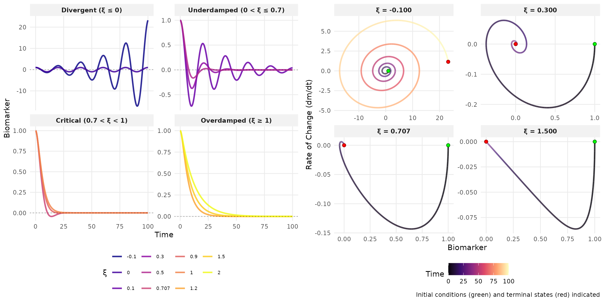
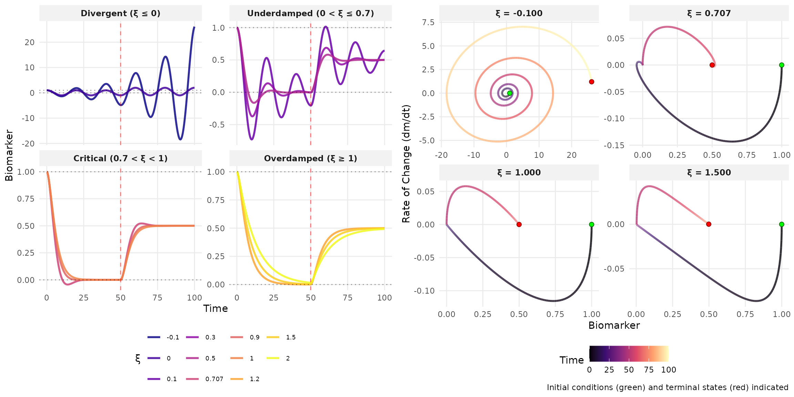
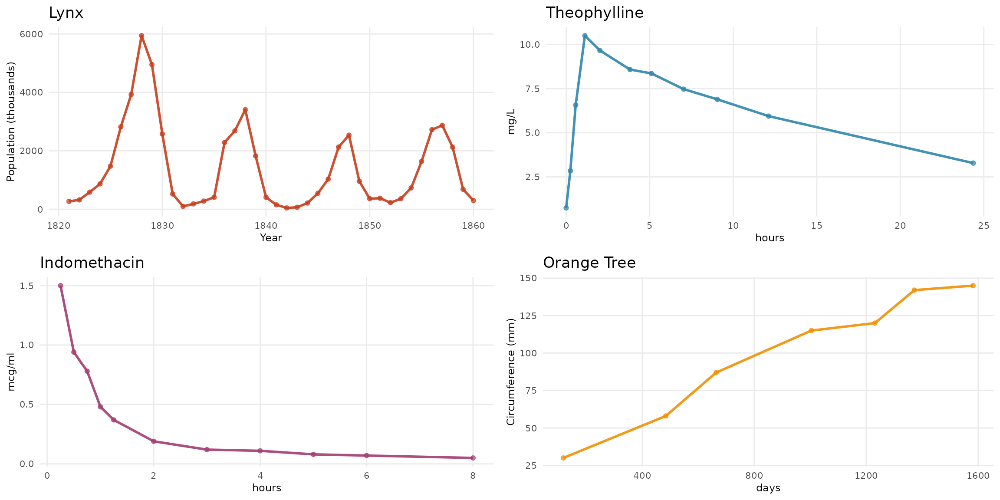

Biomarker Trajectories
Note: This part draws inspiration from the doremi package for modeling dynamical systems.
Ordinary differential equations (ODEs) provide a rigorous mathematical framework for characterizing biomarker dynamics in complex biological systems. This vignette analyzes second-order ODE models, emphasizing damping’s role in system behavior.
The temporal evolution of biomarkers is governed by the following second-order linear ordinary differential equation with initial conditions:
\frac{d^2m}{dt^2} + 2\xi\omega_n\frac{dm}{dt} + \omega_n^2 m = k\omega_n^2 u(t), \quad m(0) = m_0, \quad \frac{dm}{dt}(0) = v_0
where:
- m(t): biomarker value at time t
- \xi: damping ratio (dimensionless)
- \omega_n: natural frequency (rad/s)
- k: steady-state gain
- u(t): excitation function
Three key characteristics govern system dynamics:
- Damping Ratio (\xi): Controls oscillatory behavior and stability
- Oscillation Period (T=2\pi/\omega_n): Time between successive peaks
- Steady-State Equilibrium (m_{eq}): Asymptotic value when derivatives vanish
Autonomous Systems
For autonomous systems with constant excitation (u(t) = c), we simulate various damping ratios with zero excitation (c = 0):

| Damping Range | Dynamic Regime | Qualitative Behavior |
|---|---|---|
| \xi \leq 0 | Unstable/Marginally Stable | Exponential divergence or sustained oscillations |
| 0 < \xi \leq 0.7 | Underdamped | Decaying oscillations with convergence to equilibrium |
| 0.7 < \xi < 1 | Near-Critical Damping | Rapid convergence with minimal overshoot |
| \xi \geq 1 | Overdamped | Monotonic exponential approach to equilibrium |
Non-Autonomous System
Non-autonomous systems with time-varying excitation u(t) occur in pharmacological and environmental contexts. The response depends on both damping ratio \xi and input characteristics.
Consider a step input at t = 50:
u(t) = \begin{cases} 0 & t < 50 \\ 0.5 & t \geq 50 \end{cases}
This induces a transition from m_{\text{eq}} = 0 to m_{\text{eq}} = 0.5k, with transient behavior determined by \xi:

Real-Data Examples
Four biological datasets illustrate distinct damping behaviors:
- Canadian Lynx (1821-1934): Annual trapping data showing predator-prey population cycles with pronounced oscillations
- Theophylline: Pharmacokinetic data from 12 subjects showing drug concentration after oral administration of the anti-asthmatic medication
- Indomethacin: Plasma concentration following intravenous injection of the anti-inflammatory drug in 6 subjects
- Orange Tree Growth: Trunk circumference measurements over time from a forestry growth study

This analysis requires \omega_n^2 \geq 0 for real natural frequencies, focusing on stable or oscillatory systems that better represent biological reality. Systems with \omega_n^2 < 0 exhibit purely exponential divergence without oscillations and lack practical relevance for modeling physiological processes.
Survival Outcomes
The hazard function incorporates both the biomarker level and its rate of change:
h(t) = h_0(t) \exp(\alpha_1 m(t) + \alpha_2 |\dot{m}(t)|)
This formulation captures two distinct aspects of risk:
- m(t): The biomarker level itself (e.g., elevated glucose indicating immediate risk)
- |\dot{m}(t)|: The biomarker volatility (e.g., rapid fluctuations indicating instability)
By incorporating |\dot{m}(t)|, we effectively model both the biomarker’s central tendency and its temporal variability—analogous to simultaneously capturing mean and variance effects on survival risk. This dual characterization provides richer prognostic information than static measurements alone.
In diabetes management, stable glucose levels suggest controlled disease, while rapid fluctuations (large |\dot{m}(t)|) indicate poor glycemic control and elevated complication risk, independent of the average glucose level.
Remark: For oscillatory biomarker dynamics (\xi < 1), using absolute values prevents positive and negative velocity contributions from canceling in cumulative hazard calculations, ensuring that all variability contributes to risk assessment.